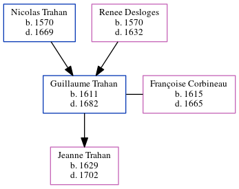

Guillaume Trahan 1611 - 1682
[ Home ] | [ Calendar ] | [ Surnames Index ] | [ Census Index ] | [ Family History ]The child of Nicolas Trahan and Renee Desloges, Guillaume Trahan, the 11 times great-grandfather of Michele Copp (née Phillips), was born in St Germain, Indre-et-Loire, Centre, France in 16111 and married Françoise Corbineau (with whom he had 1 child, Jeanne) in St Germain on Jul 13, 16271.he arrived in Acadia, Canada in 1636.
He died in 1682 in Port Royal, , New Brunswick, Canada.
Parents
- Nicolas was born in 1570
- Renee was born in 1570
Children
- Jeanne was born in 1629
Citations
- U.S. and International Marriage Records, 1560-1900 Online publication - Provo, UT, USA: The Generations Network, Inc., 2004.Original data - This unique collection of records was extracted from a variety of sources including family group sheets and electronic databases. Originally, the information was deriv
Family Tree
Generated by ged2site. Last updated on Jun 6, 2024